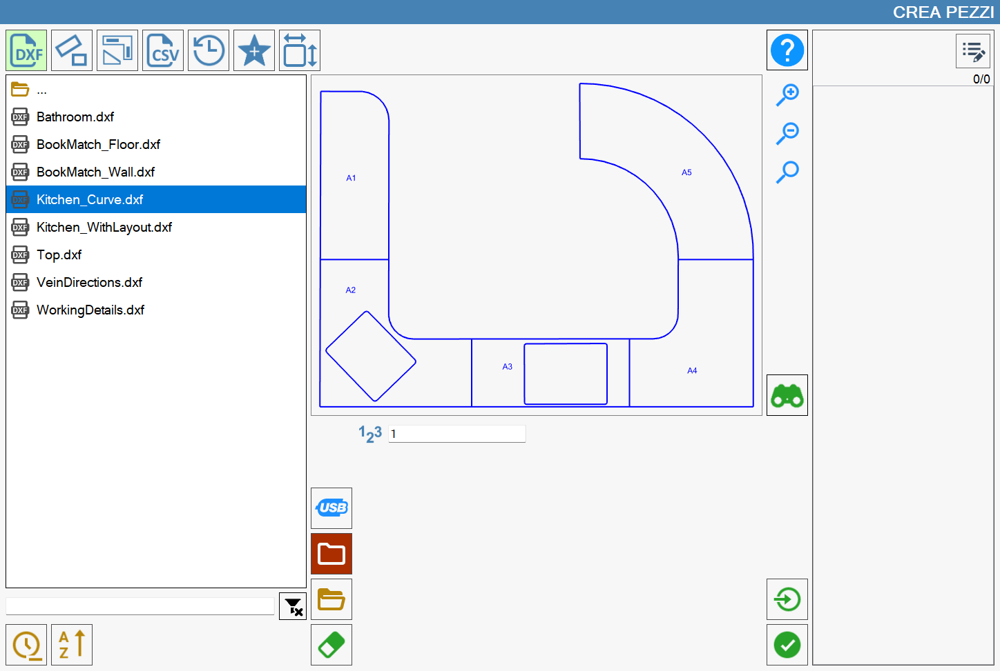
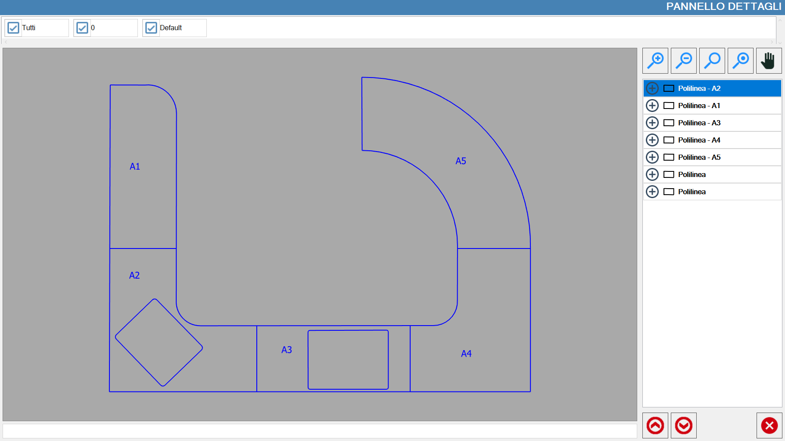
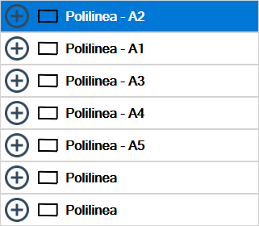
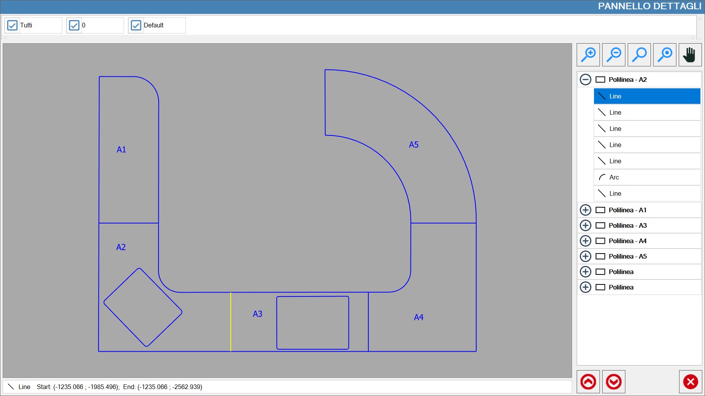
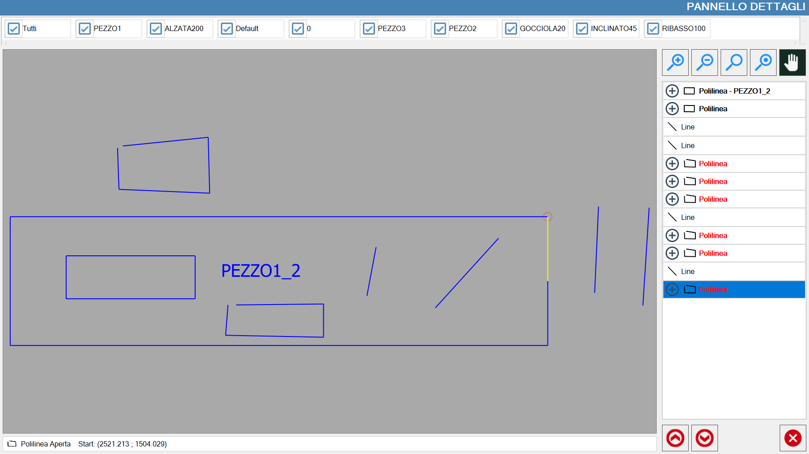

In this section, it is possible to create pieces through the import of DXF files.

List of files
In the left part of the window, there is a list that shows all the folders and DXF files contained in the currently selected path.

The element at the top of the list,

allows to return to the folder above the one in which one is currently.
Initially, the list of DXF files present in the PC's working folder is shown. It is possible to change the folder using the special buttons that are located on the right of the list of files.
 | USB memory |
 | Working folder |
 | Explore folders |
 | Delete file |
Order and filter the displayed files
The items that are below manage the application of filters and the sorting of the files that are visible.

At the top of the image is located a search bar, through which it is possible to filter the files by name, showing only those that contain the text inserted.
In this section of the screen, you can also find the following buttons:
 | Clean filter |
 | Sort by date |
 | Sort by name |
NOTEThe search by name applies exclusively to the files contained in the folder, and not to eventual subfolders present.On the contrary, the order by name and by date, is applied to each item of the list, while always showing the folders before the files.
Preview
Upon selection of a file, in the panel in the center of the screen, a preview of the drawing is displayed, so as to make immediate identification of its content.

It is possible to interact with the preview by dragging its content, or by using the buttons placed on its right.
 | Increase zoom |
Decrease zoom | |
 | Restore Viewing |
Additional buttons
The following buttons also allow to carry out additional actions.
Single import | |
Panel details |
Panel details
If a file has been selected, you can access the 'Details Panel' to visualize the properties of the DXF. This is possible through the following button located on the right of the preview:
Once opened, it will show the following panel, in addition to the list of pieces that make up the selected DXF:

Visibility management layout
On the top of this panel are reported the layouts in form of checkbox activatable or disactivatable at will.

The first item of this list of layouts allows to enable or disable the visualization of all layouts.
Side panel
Buttons related to visibility and padding
Besides the buttons already shown previously relating to the modification that zoom level and to the restoring of this, there are two new buttons:
Highlight selected piece | |
 | Move view |
List of polylines
On the central right side of the panel are reported the pieces that compose the chosen .dxf, in the form of polylines.
Selecting one of the values present in the list, the related visible piece will be highlighted with the yellow color in the preview.

When the button next to each piece is pressed, the list of polylines that constitute the piece will be made visible.
It will be also possible to highlight a single polyline of the DXF simply selecting the respective line from the list:

Lower buttons
These buttons are placed in the lower part of the side bar.

Find previous open polyline | |
Find previous open polyline |
In the following example, Panel Details has been opened for a .dxf that presents some pieces constituted by open polylines, reported in red in the list:
